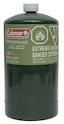

Welcome to the Bonnington Cabins Booking System.
As of September 1st 2017, hut booking fees are $15 per person/per night.
This reservation and fee payment system means you can be sure you have a bed when
you arrive at the cabins, and we can continue to maintain and improve the cabins.
Please use the cabins respectfully and enjoy your stay.
Please choose your reservation date carefully - there are NO refunds once a cabin is booked.
Warning:
There is a high possibility of vehicle break-ins and thefts from the Bombi and Porto Rico parking lots. We advise people to not leave their vehicle there and to make other travel arrangements for drop-off and pick-up. Some local options are:
-
Natasha Lockey
Mountain Shuttle Rossland
www.mountainshuttle.ca
250 231 4305
Rossland's dedicated Shuttle Service
-
Queen City Shuttles & Charters
www.kootenayshuttle.com
Direct line: 250 509 1183
See our fleet @ http://www.kootenayshuttle.com/group-charters/
-
http://www.castlegartaxi.ca/
Accessing the Bonnington Cabins requires both good navigational and avalanche skills. The Avalanche Terrain Exposure Scale (ATES) for this area is Complex. Please be prepared and exercise caution.
Please check the avalanche conditions for Kootenay / Boundary region.
Notes:
- Remember, please pack out what you pack in.
- PLEASE do not leave behind any Food or Garbage in the Cabins as it attracts Rodents.
- There are new Propane Camp Stoves and Propane Lanterns in all the cabins for this winter. The trouble is WE DO NOT SUPPLY ANY FUEL. Users are required to bring their own propane fuel canisters. Propane/Butane can be problematic in cold temperatures. For those that prefer using White Gas, those stoves and lanterns are still there as well. The propane bottles are the 1 lb. Coleman bottles. 
- Fire wood supply at the huts is not guaranteed. People using the cabins should be prepared in the event all the wood has been used up.
For information and questions, please email the huts guy!